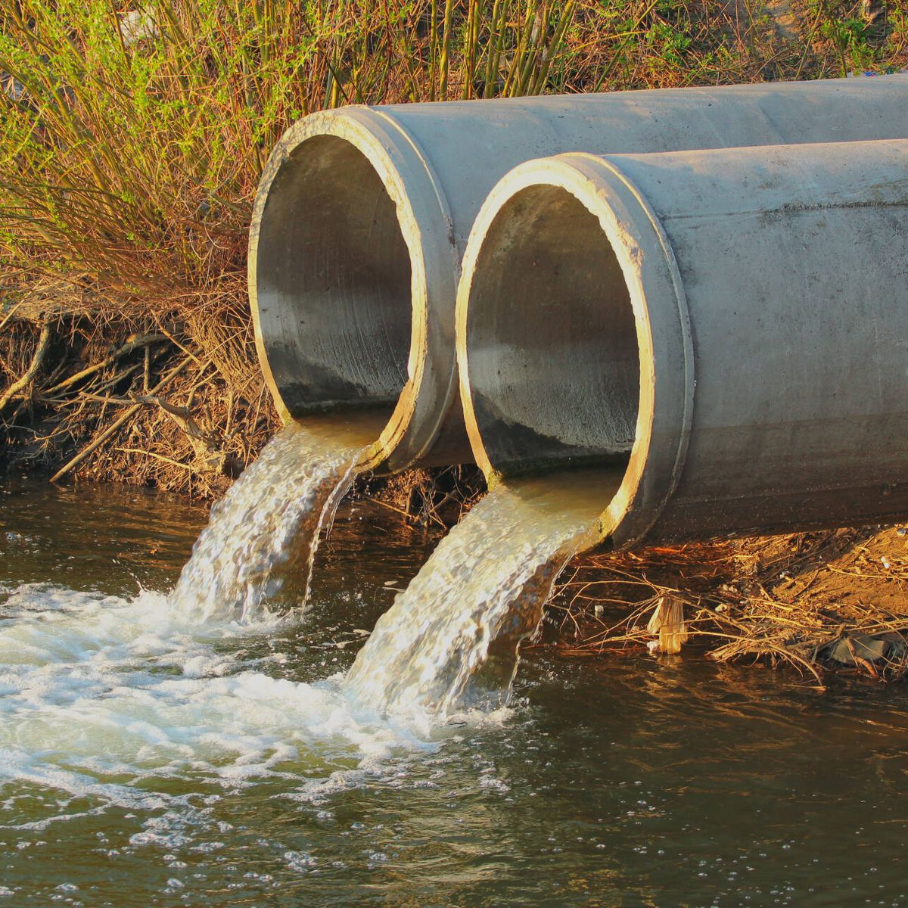

En el sector doméstico, una adecuada gestión de las aguas residuales es fundamental para mantener la calidad del agua y prevenir problemas en la instalación de fontanería. La presencia de grasa en las aguas residuales domésticas es un serio desafío, ya que puede causar obstrucciones en las tuberías, olores desagradables y, en última instancia, afectar la eficiencia del sistema de alcantarillado. Aunque se han introducido trampas de grasa para resolver este problema, es necesario evaluar su eficacia en el entorno doméstico y proponer soluciones prácticas.
Un problema importante de este estudio fue la falta de información detallada sobre la eficiencia de las trampas de grasa residenciales y su capacidad para filtrar eficazmente la grasa de las aguas residuales domésticas. Aunque algunos hogares han utilizado trampas de grasa como medida preventiva, faltan estudios sistemáticos que evalúen su desempeño en condiciones de uso diario.
Las variaciones en los tipos y cantidades de grasa producida por actividades domésticas como cocinar y lavar dificultan la estimación precisa de los excretores de grasa. Además, la falta de una guía clara para los usuarios domésticos sobre la selección, instalación y mantenimiento adecuados de estas trampas contribuye al problema actual.
Por tanto, el principal objetivo de este estudio es abordar la eficacia de los separadores de grasas en entornos residenciales, teniendo en cuenta la variedad de fuentes de grasa, y proporcionar recomendaciones específicas para mejorar su rendimiento. Se realizarán estudios experimentales en condiciones domésticas simuladas y se recopilarán datos sobre la eficacia de diferentes tipos de separadores de grasa. Los resultados de este estudio no sólo ayudarán a gestionar las aguas residuales domésticas de forma más eficaz, sino que también proporcionarán información valiosa para educar a los usuarios sobre las mejores prácticas para la gestión de grasas domésticas como las que liberan los residuos de jabones y de las grasas de la cocina.